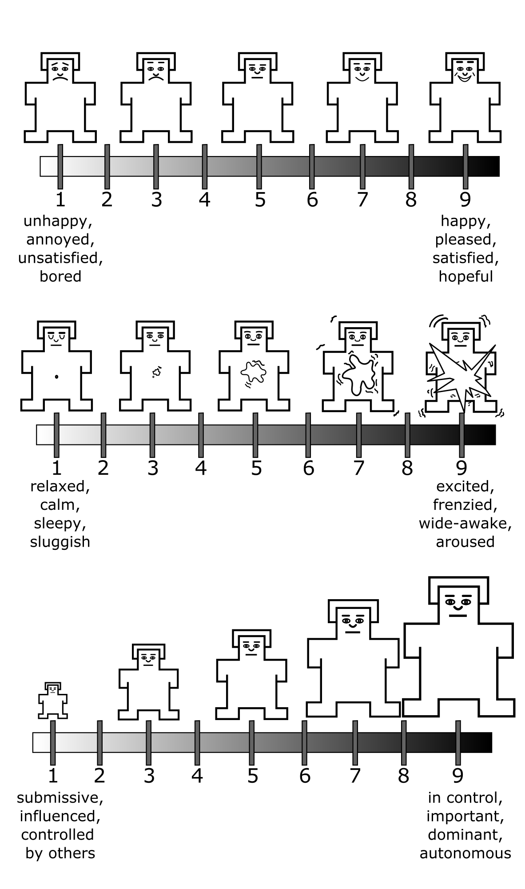
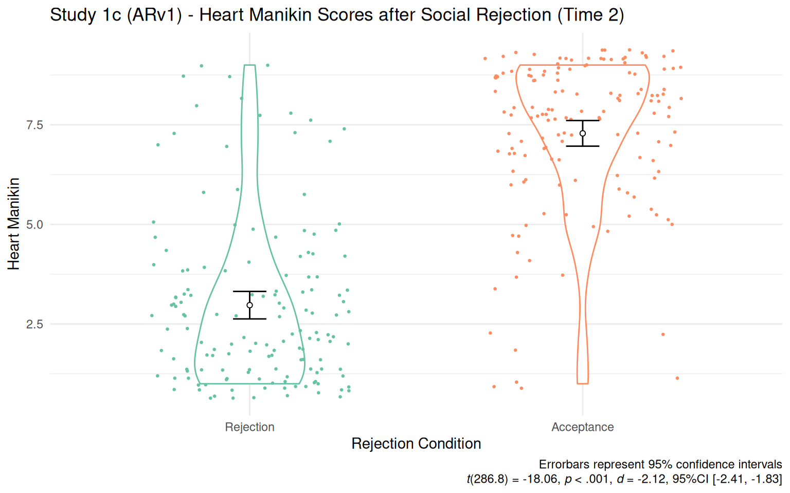
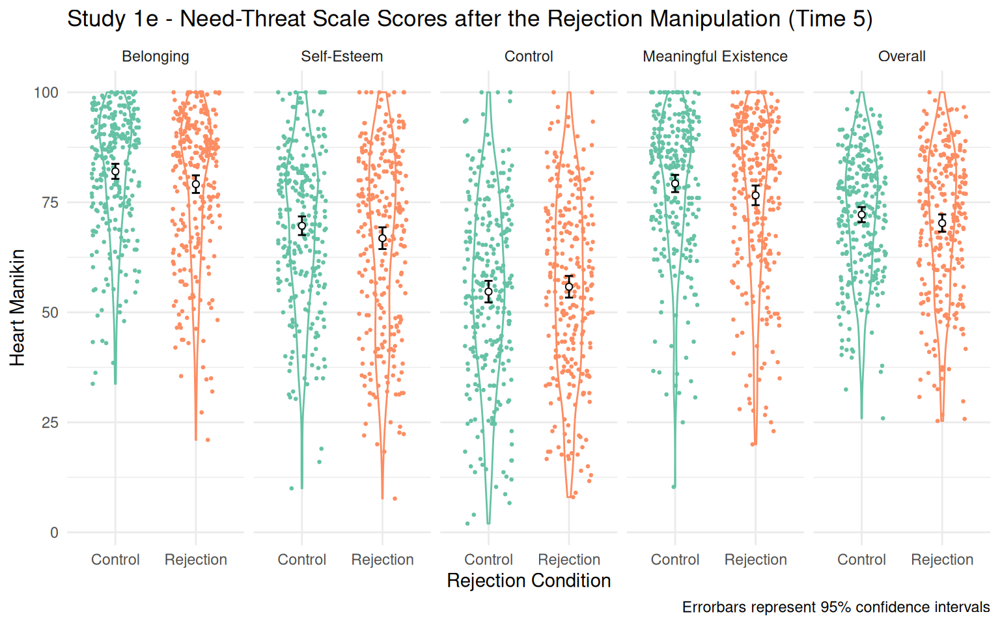

| Measure | Time | Construct | Validity | Citation |
|---|---|---|---|---|
| Self-Assessment Manikin - Valence | Time 1 | State valence | Con. | Bradley & Lang, 1994 |
| Center for Epidemiologic Studies Depression Scale (CES-D) | Time 1 | Depressive symptoms | Con. (R) | Radloff, 1977 |
| PROMIS Social Isolation | Time 1 | Social isolation | Con. | Cella et al., 2019; Hahn et al., 2014 |
| Beliefs about Biological Differences between Blacks and Whites Scale | Time 1 | False beliefs about biological differences between Black and White people | Dis. | Hoffman et al., 2016 |
| Interpersonal Reactivity Scale | Time 1 | Tendency to react to another person’s experience | Dis. | Davis, 1980 |
| Self-Monitoring Scale | Time 1 | Tendency to self-observe and control one’s behavior according to social appropriateness | Dis. | Snyder, 1974 |
| Paradox Mindset Scale | Time 1 | Tendency to accept and get excited by tensions | Dis. | Miron-Spektor et al., 2018 |
| Integrative Complexity Scale | Time 1 | Capacity to acknowledge the competing opinions | Dis. | Zhang et al., 2015 |
| Multiple Identity Scale | Time 1 | Membership to different social groups | Dis. | Haslam et al., 2008 |
| Note. Con. = Convergent Validity. Dis. = Discriminant Validity. (R) = Reverse association. |
4 Study 1: Validating The Heart Manikin and The Rejection Manipulation
The critical outcome measure for my dissertation is a state measure of belonging—that captures how much participants feel accepted, connected, loved, and cared for at a given moment. My dissertation required a new scale since existing scales focus on measuring belonging in a group context or belonging as an individual difference. For example, the need-threat scale (Williams 2009), measures how one felt rejected by a group in Cyberball (e.g., “I felt the other players interacted with me a lot”, “I felt I belonged to the group”). The UCLA loneliness scale (Russell 1996) measures threatened belonging at the individual difference level, not at the state level (e.g., “How often do you feel that you lack companionship?”). In this study, I developed a new scale that is unconstrained in a group context and measures a state belonging.
In Studies 2 and 3, I planned to have all participants complete a social rejection induction essay from previous studies (Sunami, Nadzan, and Jaremka 2019; Twenge and Campbell 2003), without a control or acceptance condition to reduce the number of participants and costs. Since various forms of this manipulation have been successfully used in many labs to induce rejection, I was initially confident that this manipulation would be effective. To further ensure that this particular social rejection induction was effective before running my primary studies, I examined the effectiveness of the rejection manipulations in Studies 1c and 1e.
4.1 The Heart Manikin
To provide a suitable measure for my dissertation, I proposed the Heart Self-Assessment Manikin scale, a new single-item measure of belonging (Figure 4.1). The Heart Self-Assessment Manikin is an adapted version of the Self-Assessment Manikin (Figure 4.2) that measures emotional valence, arousal, and dominance in a given moment (Bradley and Lang 1994; Lang 1980). The original Self-Assessment Manikin showed good convergent validity with existing verbal measures (Bradley and Lang 1994). In the original Self-Assessment Manikin, participants see pictorial figures and choose a number corresponding to a figure that best describes their current feelings (valence, arousal, dominance). Likewise, the Heart Self-Assessment Manikin asks participants to indicate the number best reflects their current belonging. Similar to the original Self-Assessment Manikin, the Heart Self-Assessment Manikin is easy to administer, quick to complete, and easily understood by participants relative to a traditional text-based questionnaire.

Note. Participants indicate how they feel at the moment on a 9-point scale. The body and the face of the figure is taken from the valence subscale of the original Self-Assessment Manikin (Lang 1980).

Note. From top to bottom, the items refer to valence, arousal, and dominance, respectively. Participants indicate how they feel at the moment on a 9-point scale. The scale has been validated as a state measure (Lang 1980). The vector drawings of the valence and arousal items are adopted from an existing GitHub repository at https://github.com/hexa-/SAM-vectors (hexa- 2020)
4.2 Current Study
In Study 1, I evaluated construct validity and test-retest reliability of the Heart Manikin, using five existing datasets (Studies 1a, 1b, 1c, 1d, and 1e). For construct validity, I focused on convergent validity, discriminant validity, and the scale’s sensitivity to a laboratory manipulation already known to affect belonging (Boateng et al. 2018). In addition, I tested the effectiveness of the rejection manipulation to be used in the subsequent dissertation studies (Study 1e).
4.2.1 Convergent Validity
If the Heart Manikin measures belonging, it should correlate with other measures of belonging. Thus, I expected that the Heart Manikin would converge measures of belonging [Studies 1c, 1d, and 1e; Williams (2009)] and social isolation (Study 1b). I also expected that the heart Manikin scores would also converge with measures of depression (Study 1a) since lonely people experience more depressive symptoms than non-lonely people (Cacioppo et al. 2006; Jaremka et al. 2013, 2014).
The belonging need is pervasive—people with lower belonging may also experience lower self-esteem, a lower sense of control, and lower sense of meaning (Hartgerink et al. 2015; Leary et al. 1995; Williams 2009). Thus, I expected that the Heart Manikin scores converge with the measures of self-esteem, control, and a sense of meaning (Studies 1c, 1d, and 1e).
Socially accepted people experience positive emotions; socially rejected people experience negative emotions (Gerber and Wheeler 2009; Richman and Leary 2009; Williams 2009). The valence scores of the Self-Assessment Manikin (Bradley and Lang 1994) measures how positively or negatively a person is feeling at a moment. Thus, I expected that the Heart Manikin scores would positively correlate with the valence scores of the original Self-Assessment Manikin (Studies 1a, 1b, 1c, 1d, 1e).
People who expect and fear social rejection tend to report lower belonging than those who do not since they are prone to act in ways to elicit social rejection from others, akin to self-fulfilling prophecy (Downey et al. 1998). Thus, I expected that the Heart Manikin scores would negatively correlate with the measures of sensitivity of social rejection, including rejection sensitivity (Study 1e), fear of negative evaluation (Study 1e), and avoidant and anxious attachment styles (Study 1e).
People with a caring and nurturing relationship with their romantic partner should report higher belonging than those who do not. Thus, I expected that the Heart Manikin scores would positively correlate with the degree of support that they receive from their partner, the relationship quality, and closeness to their partner, and perceived responsiveness of their partner (Study 1b). Conversely, the heart manikin scores should negatively correlate with the measures of conflicts, ostracism, psychological and physical abuse in a romantic relationship (Studies 1b and 1c).
4.2.2 Discriminant validity
If the Heart Manikin scale measures state belonging, its scores should be discriminant against measures of other unrelated constructs. To examine discriminant validity, I explored correlations between the Heart Manikin scores with the following measures: arousal and dominance subscales of the Self-Assessment Manikin [Studies 1a, 1c, 1d, and 1e; Bradley and Lang (1994); Lang (1980)], beliefs about biological differences between Black and White people [Study 1a; Hoffman et al. (2016)], interpersonal reactivity [Study 1a; Davis (1980)], self-monitoring tendencies [Study 1a; Snyder (1974)], tendency to be excited by paradoxes [Study 1a; Miron-Spektor et al. (2018)], capacity to acknowledge and integrate competing opinions of others [Study 1a; Zhang et al. (2015)], membership to different social groups [Study 1a; Haslam et al. (2008 Oct-Dec)], subjective social status [Studies 1b, 1c, and 1e; Adler et al. (2000)], perpetration of abusive and controlling behaviors in a romantic relationship [Study 1b; Graham-Kevan and Archer (2003) and Postmus, Stylianou, and McMahon (2015)], food cravings (Study 1b), dietary social support (Study 1b), body image (Study 1b), levels of physical activity [Study 1b; Godin (2011)], sleep quality [Study 1b; Cella et al. (2019)], narcissism [Study 1b; Konrath, Meier, and Bushman (2014)], perceived psychological stress [Study 1b; Cohen, Kamarck, and Mermelstein (1983)], the need for closure [Study 1d; Kruglanski (1990)], and adherence to traditional social values [Study 1d; Proulx and Heine (2008); Rosenblatt et al. (1989)].
4.2.4 Test-Retest Reliability
For studies that measured the Heart Manikin repeatedly (Studies 1b, 1c, 1d, and 1e), I evaluated the test-retest reliability of the scale by calculating intraclass correlations (Koo and Li 2016; Rabe-Hesketh and Skrondal 2012). I did not make any a priori prediction about the test-retest reliability of the Heart Manikin for two reasons. First, I could not make an a priori prediction about test-retest reliability since the measure was designed to be a state scale and thus, by definition, should fluctuate over time. Second, the primary purpose of validating the Heart Manikin was to use it as an outcome measure after an experimental manipulation for Studies 2 and 3. Since I was not relying on the temporal stability of the measure for these studies (e.g., comparing pre vs. post scores), the utility of the scale for my dissertation did not depend on the test-retest reliability of the scale. I calculated the test-retest reliability of the Heart Manikin to explore the psychometric property of the scale.
4.2.5 Validating the Rejection Manipulation
In Studies 2 and 3, I planned to induce feelings of social rejection using the rejection prompt in the social rejection paradigm used in the study. In this paradigm, participants would be asked to write about their time being rejected in the past (Sunami, Nadzan, and Jaremka 2019; Twenge and Campbell 2003). I planned to use only the social rejection prompt, without an acceptance or neutral condition, to reduce the number of participants and thus the costs of the studies. The downside of this approach is that I was not able to test the effectiveness of the manipulation in Studies 2 and 3 since I only used the rejection condition without a non-rejection condition. Thus, it was crucial to ensure that the social rejection manipulation used in Studies 2 and 3 was effective before conducting the studies. Again, many other laboratories used various forms of this manipulation to induce rejection (Bernstein et al. 2010; Derrick, Gabriel, and Hugenberg 2009; Troisi et al. 2015), adding the confidence to the effectiveness of the manipulation. To further ensure the effectiveness in our laboratory, I validated the rejection via a pilot study, consistent with an existing recommendation (Hauser, Ellsworth, and Gonzalez 2018). Study 1e included the essay rejection manipulation with the same rejection induction that I planned to use in Studies 2 and 3 and a control condition. Thus, I treated Study 1e as a pilot study and examine if the rejection manipulation affected belonging.
4.2.6 General Analytic Strategy
To examine convergent validity, I tested an association between the aforementioned measures used in the study and the Heart Manikin. I used an alpha of .05 as a cutoff point for statistical significance. To examine discriminant validity, I used an equivalence test (Lakens 2017) since a non-significant relationship is not an absence of a relationship in a null-hypothesis testing. To do so, I set the smallest effect size of interest (SESOI) that is the minimal effect size that I consider theoretically meaningful. Any effect size that was lower than this effect size was considered theoretically negligible, and thus equivalent to zero. To determine the SESOI, I first used the average effect size (r = .21) derived from 474 meta-analytic effect sizes (with more than 25,000 studies) in social psychology (Richard, Bond, and Stokes-zoota 2003). I first transformed this estimate (r = .21) to Fisher’s z (Fisher’s z = .21) for normality (Borenstein 2019). To safeguard against the inflation of effect size, I consider the lower bound of the 60% confidence interval as the target effect size (Perugini, Gallucci, and Costantini 2014). To calculate the confidence interval, I first calculated the standard error for the Fisher’s z using the sample size of 474, treating each meta-analytic effect size independently (Borenstein 2019):
\[SE_{z} = \sqrt{\frac{1}{474-3}} = 0.046\]
Then, I calculated the confidence interval using the normal distribution. The lower bound of the 60% confidence interval was Fisher’s z = 0.17 (Fisher z = 0.21, 60%CI[0.17, 0.25]), which was equivalent to r = 0.17 and Cohen’s d = 0.35. Thus, I set the SESOI as r = .17. I compared any non-significant observed coefficient with the SESOI to see if the observed effect size was theoretically negligible. To examine the test-retest reliability, I calculated ICCs and interpreted them as poor (<.50), moderate (.50–.75), good (.75–.90), and excellent (>.90) based on existing guidelines (Koo and Li 2016).
Studies 1b, 1c, 1d, and 1e include data where participants completed the Heart Manikin and other measures across multiple time points. To account for the dependency in data, I used a linear mixed model. I describe fixed predictors under each study section. I first included both random intercept and the random effect of Time. If the model did not converge, I removed the random effect of Time from the model. If the model converged, I retained the random Time effect. To determine the structure of the residual variance-covariance matrix (R matrix) and the random-effects variance-covariance structure (G matrix), I tested models with different structures and choose the one that fits the data best. For the R matrix, I tested diagonal, compound symmetry, and unstructured structures. For the G matrix, I tested identity, variance components, and unstructured structures.
4.3 Study 1a (RPR Data)
I used a cross-sectional dataset from an online mass testing session conducted for the psychology participant pool. See Table 4.1 for the measures included in this study.
4.3.1 Participants
All undergraduate students enrolled in an introductory psychology course were invited to complete a mass testing session for the psychology participant pool at the University of Delaware in 2018 Fall. Among those who accessed the survey website (1160 participants), 571 participants were randomly assigned to a questionnaire block that contained the Heart Manikin and thus included in this study.
4.3.2 Procedure and Materials
Participants answered an online questionnaire that included all the measures. Since the goal of Study 1 is to validate the Heart Manikin adapted from the Self-Assessment Manikin, I describe the Heart Manikin and the Self-Assessment Manikin in more detail below. For other measures, see Table 4.1 for the summary and Appendix A for the detailed descriptions.
Heart Manikin. I developed the Heart Manikin to measure a state belonging: how much a person feels cared for, accepted, loved, and connected at a given moment (Figure 1). The measure consisted of 5 mankins adopted from the valence item of the Self-Assessment Manikin (Lang 1980). Each figure has a drawing of a heart. The size of the heart and the face of the manikin corresponds with belonging. The bigger the heart the manikin has, the more belonging. The scale had a horizontal bar below the manikin figures that presented 9 ticks, with ticks below and between the 5 figures. Participants were asked to indicate how they feel at the moment in this 9-point scale (“Please select the number that best corresponds to how you currently feel.”). I report the reliability and validity of the scale in the result sections.
Self-Assessment Manikin. The Self-Assessment Manikin is a 3-item measure of valence, arousal, and dominance (Bradley and Lang 1994; Lang 1980). Each scale had 5 manikin figures representing different levels of valence, arousal, and dominance. Participants responded how they currently feel on a 9-point scale: 1 = “unhappy, annoyed, unsatisfied, and bored” to 9 = “happy, pleased, satisfied, and hopeful” for valence, 1 = “relaxed, calm, sleepy, sluggish” to 9 = “excited, frenzied, wide-awake, and aroused” for arousal, and 1= “submissive, influenced, controlled by others” to 9 = “in control, important, dominant, autonomous” for dominance. The Self-Assessment Manikin has a good convergent validity with the existing verbal measures of valence, arousal, and dominance (Bradley and Lang 1994). Study 1a only included the valence item.
4.3.3 Results
To test convergent and discriminant validities, I examined bivariate correlations between the Heart Manikin scores and the scores of the measures in Table 4.1. Results are presented in Figure 4.3 (see Table 1 for the bivariate correlation table). Consistent with the prediction, the Heart Manikin scores correlated with the hypothesized measures for convergent validity: the Valence Manikin (r(569) = 0.71, p < .001, 95%CI [0.66, 0.75]), social isolation (r(564) = -0.60, p < .001, 95%CI [-0.65, -0.54]), CESD (r(569) = -0.58, p < .001, 95%CI [-0.63, -0.53]).
For the discriminant validity, I found mixed results. As predicted, the Heart Manikin scores did not correlate with the measures of overall interpersonal reactivity (r(567) = 0.01, p = .856, 95%CI [-0.07, 0.09]), perspective taking (r(568) = -0.00, p = .929, 95%CI [-0.09, 0.08]), fantasy (r(568) = -0.03, p = .494, 95%CI [-0.11, 0.05]), paradoxical mindset (r(567) = 0.03, p = .451, 95%CI [-0.05, 0.11]), or integrative complexity (r(566) = 0.02, p = .596, 95%CI [-0.06, 0.10]). However, the Heart Manikin scores correlated with the measures of empathy (r(567) = 0.16, p < .001, 95%CI [0.08, 0.24]), distress (r(567) = -0.12, p = .005, 95%CI [-0.20, -0.04]), multiple identity (r(566) = 0.19, p < .001, 95%CI [0.11, 0.27]), social monitoring (r(568) = -0.09, p = .040, 95%CI [-0.17, 0.00]), and beliefs in biological differences between Black and White people (r(568) = -0.11, p = .008, 95%CI [-0.19, -0.03]), contrary to the prediction.
For all correlation coefficients with a p-value larger than p = .05, I performed an equivalence test to examine if they were theoretically equivalent to zero. The 90% confidence intervals of the correlation coefficients for the interpersonal reactivity, paradoxical mindset, and integrative complexity all fell within the smallest effect size of interest (|r| = 0.17). Thus, I consider these coefficients as theoretically equivalent to zero.
Overall, these results suggest strong support for the convergent validity and moderate support for the discriminant validity of the Heart Manikin.
4.4 Study 1b (RAIv1)
This study was designed to test the relationship between interpersonal distress and immune function (Jaremka, unpublished). Table 4.2 shows a summary of the measures included in the study.
| Measure | Time | Construct | Validity | Citation |
|---|---|---|---|---|
| Self-Assessment Manikin - Valence | Time 1, 2, 3 | State valence | Con. | Bradley & Lang, 1994 |
| MacArthur Scale of Subjective Social Status | Time 1, 2, 3 | Subjective social status | Dis. | Adler et al., 2000 |
| PROMIS—Short Form 8a | ||||
| Social Isolation | Time 1, 2, 3 | Social isolation | Con. (R) | Cella et al., 2019; Hahn et al., 2014 |
| Emotional Support | Time 1, 2, 3 | Emotional support | Con. | Cella et al., 2019; Hahn et al., 2014 |
| Informational Support | Time 1, 2, 3 | Informational support | Con. | Cella et al., 2019; Hahn et al., 2014 |
| Couples Satisfaction Index | Time 1, 2, 3 | Romantic relationship quality | Con. | Funk & Rogge, 2007 |
| Inclusion of Other in Self Scale | Time 1, 2, 3 | Closeness between the self and the other person | Con. | Aron et al., 1992 |
| Partner Responsiveness Scale | Time 1, 2, 3 | Romantic partner responsiveness | Con. | Gable et al., 2012 |
| Relationship Conflict Scale | Time 1, 2, 3 | Conflicts in a romantic relationship | Con. (R) | Ad-hoc |
| Ostracism from Romantic Partner Scale | Time 1, 2, 3 | Ostracism from a romantic partner | Con. (R) | Ad-hoc |
| Abusive Behavior Inventory—Revised | ||||
| Psychological Abuse | Time 1, 2, 3 | Perpetration of psychological abuse against a romantic partner | Dis. | Postmus et al., 2015 |
| Physical Abuse | Time 1, 2, 3 | Perpetration of physical abuse against a romantic partner | Dis. | Postmus et al., 2015 |
| Controlling Behavior Scale—Modified | ||||
| Economic Control | Time 1, 2, 3 | Perpetration of economic control | Dis. | Graham-Kevan & Archer, 2003 |
| Threats | Time 1, 2, 3 | Perpetration of threats | Dis. | Graham-Kevan & Archer, 2003 |
| Intimidation | Time 1, 2, 3 | Perpetration of intimidation | Dis. | Graham-Kevan & Archer, 2003 |
| Emotional Control | Time 1, 2, 3 | Perpetration of emotonal control | Dis. | Graham-Kevan & Archer, 2003 |
| Isolation | Time 1, 2, 3 | Perpetration of isolation | Dis. | Graham-Kevan & Archer, 2003 |
| Modified Food Craving Questionnaire—Trait Version | Time 1, 2, 3 | Food craving | Dis. | Cepeda-Benito et al., 2000 |
| Dietary Social Support Scale | Time 1, 2, 3 | Support from one's romantic partner about eating | Dis. | Ad-hoc |
| Body Image Questionnaire | Time 1, 2, 3 | Body image | Dis. | Ad-hoc |
| Godin Leisure-Time Exercise Questionnaire | Time 1, 2, 3 | Physical activity | Dis. | Godin, 2011; Godin & Shephard, 1985 |
| PROMIS Sleep Disturbance—Short Form 4a | Time 1, 2, 3 | Sleep disturbance | Dis. | Cella et al., 2019 |
| Single-Item Narcissism Scale | Time 1, 2, 3 | Narcissism | Dis. | Konrath et al., 2014 |
| Perceived Stress Scale | Time 1, 2, 3 | Perceived stress | Dis. | S. Cohen et al., 1983 |
| Note. Con. = Convergent Validity. Dis. = Discriminant Validity. (R) = Reverse association. | ||||
4.4.1 Participants
One-hundred and seven participants participated in the study. Participants were eligible to participate if they were in a romantic relationship at the beginning of the study. Participants were recruited from the psychology participant pool at the University of Delaware. They received partial course credits as compensation.
The dataset contained data from 121 participants. Participants were eligible to participate if they were in a romantic relationship at the beginning of the study. Participants were recruited from the psychology participant pool at the University of Delaware. They received partial course credits as compensation. During the data inspection, I found that two participants had duplicate data points in the study One participant had 2 data points for the Visit 3 on the same date but no data for Visit 2. For this participant, I disregarded their data from later participation on that day. Another participant had participated twice for Visit 1 on different dates. I disregarded their data for the later participation for Visit 1.
4.4.2 Procedure and Materials
The study had three visits (Visits 1–3) with average intervals of 27.24 days between Visits 1 and 2, and 27.23 days between Visits 2 and 3, respectively. In each visit, participants came to a group testing room and answered all questionnaires. The Heart Manikin was identical to the ones used in Study 1a. See Table 4.2 for the summary of the measures and [Appendix] for detailed descriptions.
The following questionnaires included questions about their current romantic partner: the Couples Satisfaction Index (Funk and Rogge 2007), the Inclusion of the Other in the Self Scale to one’s current romantic partner (Aron, Aron, and Smollan 1992), the Partner Responsiveness Scale (Gable and Impett 2012), the Relationship Conflict Scale, the Ostracism from Romantic Partner Scale, the Abusive Behavior Inventory-Revised (Postmus, Stylianou, and McMahon 2015), the Controlling Behavior Scale (Graham-Kevan and Archer 2003), and the Dietary Social Support Scale. In Visits 2 and 3, participants who are no longer in a relationship with a partner previously reported answered about both their relationship with a new romantic partner and their ex-partner.
4.4.3 Results
For testing convergent validity, I constructed a mixed model that predicted the Heart Manikin across time for each measure in Table 4.2. I included the fixed effects of Time (categorical; 1–3) and the scores of a given measure (centered). I first included the random intercept and the random effect of Time. However, the model failed to converge with the Time random effect, and thus I dropped the Time random effect. Figure 4.4 shows regression coefficients for each measure predicting the Heart Manikin scores after controlling for the fixed effect of Time.
Convergent Validity. Consistent with the predictions, all convergent measures showed evidence for convergent validity: valence manikin (B = 0.57, SE = 0.04, t = 12.78, p < .001), partner responsiveness (B = 0.39, SE = 0.05, t = 7.35, p < .001), inclusion of the other in the self (B = 0.29, SE = 0.06, t = 5.11, p < .001), informational support (B = 0.34, SE = 0.05, t = 6.20, p < .001), emotional support (B = 0.43, SE = 0.05, t = 8.77, p < .001), couples satisfaction (B = 0.44, SE = 0.05, t = 8.68, p < .001), social isolation (B = -0.44, SE = 0.05, t = -7.95, p < .001), partner ostracism (B = -0.38, SE = 0.05, t = -7.14, p < .001), relationship conflict (B = -0.25, SE = 0.05, t = -4.78, p < .001), and depression (B = -0.52, SE = 0.05, t = -10.07, p < .001). These results suggest a strong support for the convergent validity for the Heart Manikin.
Discriminant Validity. Out of the 13 measures for the discriminant validity, 9 measures did not correlate with the Heart Manikin scores, supporting the discriminant validity: sleep quality (B = 0.03, SE = 0.06, t = 0.56, p = .578), socioeconomic status (B = 0.13, SE = 0.06, t = 1.97, p = .050), psychological abuse perpetration (B = -0.17, SE = 0.06, t = -2.70, p = .007), physical abuse perpetration (B = -0.02, SE = 0.06, t = -0.34, p = .735), isolation control (B = -0.11, SE = 0.06, t = -1.86, p = .064), intimidation control (B = -0.04, SE = 0.05, t = -0.73, p = .464), emotional control (B = -0.09, SE = 0.06, t = -1.59, p = .113), economic control (B = -0.09, SE = 0.06, t = -1.61, p = .108), craving (B = -0.07, SE = 0.07, t = -1.02, p = .310), and body image (B = -0.02, SE = 0.07, t = -0.27, p = .786). Contrary to the prediction, 3 measures correlated with the Heart Manikin: threats control (B = -0.09, SE = 0.06, t = -1.59, p = .113), stress (B = -0.42, SE = 0.06, t = -7.62, p < .001), and narcissism (B = -0.14, SE = 0.06, t = -2.27, p = .024).
For all coefficients with a p-value greater than .05, I ran an equivalence test to test if they were theoretically equivalent to zero (Figure 4.4). Results showed that the correlation coefficients with the measures of sleep quality, physical abuse, intimidation, and body image were theoretically equivalent to zero (using |r| = 0.17). The correlation coefficients with the measure of economic control, emotional control, and craving were not equivalent to zero or different from zero, and thus I interpret the results for these measures as ambiguous. Overall, the current results suggest a moderate discriminant validity of the Heart Manikin scores, especially against measures of sleep quality, physical abuse, intimidation, and body image.
Test-Retest Reliability. To explore the test-retest reliability, I constructed an unconditional mixed model predicting the Heart Manikin scores over Time, and interpreted its intraclass correlation (ICC) as a measure of reliability. The obtained ICC was 0.33 (average interval between visits = 36.3 days). The ICC indicates a poor reliability according to the guideline (Koo and Li 2016). These results suggest that participants reported different levels of Heart Manikin scores across the visits. Note that the low reliability does not imply that the scale performed well or poorly, since the Heart Manikin scale was meant to measure fluctuations over time.
4.5 Study 1c (ARv1)
Study 1c was designed to test whether social rejection by a close other threatens belonging more than social rejection by a stranger (Nadzan, Jaremka, and Sunami 2019). Table 4.3 summarizes the measures used in the study.
| Measure | Time | Construct | Validity | Citation |
|---|---|---|---|---|
| Self-Assessment Manikin | ||||
| Valence | Times 1, 2, & 3 | State valence | Con. | Bradley & Lang, 1994 |
| Arousal | Time 2 | State arousal | Dis. | Bradley & Lang, 1994 |
| Dominance | Time 2 | State dominance | Dis. | Bradley & Lang, 1994 |
| Modified Need-Threat Scale—Essay Version | ||||
| Belonging | Time 2 | Belonging | Con. | Williams, 2009 |
| Self-Esteem | Time 2 | Self-esteem | Con. | Williams, 2009 |
| Control | Time 2 | Control | Dis. | Williams, 2009 |
| Meaningful Existence | Time 2 | Meaning existence | Dis. | Williams, 2009 |
| MacArthur Scale of Subjective Social Status | Time 3 | Subjective social status | Dis. | Adler et al., 2000 |
| Note. Con. = Convergent Validity. Dis. = Discriminant Validity. (R) = Reverse association. | ||||
4.5.1 Participants
Two-hundred ninety-two participants were recruited from Amazon Mechanical Turk (MTurk). Participants received $1.50 for participation.
4.5.2 Procedure and Materials
The study was a 2 (Social Rejection: Rejection vs. Acceptance) x 2 (Essay Target: Stranger vs. Close Friend) design. Participants provided informed consent and completed the Heart Manikin (Time 1) and the Time 1 measures (see Table 4.3). Then, participants were randomly assigned to one of the five essay conditions. In the stranger rejection condition, participants wrote about a time when they felt rejected by a stranger. In the close friend rejection condition, participants wrote about a time when they felt rejected by a close friend. In the stranger acceptance condition, participants wrote about a time when they felt accepted by a stranger. In the close friend acceptance, participants wrote about a time when they felt accepted by a close friend. Participants wrote the essay for 5 minutes. After the essay task, participants answered the Heart Manikin, the original Self-Assessment Manikin, and the Need-Threat Scale at Time 2. Then, participants indicated the characteristics of the person that they described in the essay task, unrelated to the current scale validation. Next, participants answered the Heart Manikin and the valence Self-Assessment Manikin and further questions about the person in the essay task at Time 3. Then, participants again answered the valence Self-Assessment Manikin and the Heart Manikin, and the demographics at Time 4 (Bradley and Lang 1994). See [Appendix] for the detailed descriptions of these measures.
4.5.3 Results
Convergent and Discriminant Validities. To test convergent discriminant validities, I first examined the bivariate correlations between the Heart Manikin and the included measures in Table 4.3. Detailed results are available in [Appendix]. Here, I report the results with the socioeconomic status, since I detail results for the other measures in the mixed models below. Contrary to the prediction, the socioeconomic status scores correlated with the Heart Manikin scores r(288) = 0.18, p = .002, 95%CI [0.06, 0.29], suggesting that the Heart Manikin scores did not discriminate against the subjective socioeconomic status.
To test convergent and discriminant validities after controlling for the manipulations, I examined an association between the Heart Manikin scores and Time 2 measures. To do so, I constructed regression models predicting the Time 2 Heart Manikin scores for each Time 2 measure. I included the following predictors in the model: the given Time 2 measure, Social Rejection (-0.5 = Rejection, 0.5 = Acceptance), Essay Target (-0.5 = Stranger, 0.5 = Close Friend), and Social Rejection x Essay Target. Results showed that all indicators for convergent validity all predicted the Heart Manikin Scores: the valence manikin (B = 0.86, SE = 0.03, t = 24.85, p < .001), self-esteem (B = 0.57, SE = 0.05, t = 11.60, p < .001), belonging (B = 0.79, SE = 0.06, t = 14.03, p < .001), control (B = 0.33, SE = 0.04, t = 7.38, p < .001), meaningful existence (B = 0.51, SE = 0.05, t = 10.08, p < .001), and overall need-threat (B = 0.78, SE = 0.05, t = 15.26, p < .001), supporting the convergent validity. Contrary to the prediction, the discriminant validity indicators also co-varied with the Heart Manikin as well: arousal (B = 0.18, SE = 0.04, t = 4.62, p < .001), dominance (B = 0.56, SE = 0.04, t = 15.64, p < .001). See Figure 4.5 for the forest plot.
Since the Heart Manikin and the Valence Manikin were measured over time, I created a linear mixed model to examine convergent and discriminant validities of the Heart Manikin with the valence Self-Assessment Manikin item across Times 1–3. I created a dummy variable (Grouping Dummy) representing the four experimental groups in the study to facilitate interpretation. The fixed predictors were Time, Valence Manikin, Grouping Dummy, and Grouping Dummy x Time. Results showed that the valence scores predicted the Heart Manikin scores (B = 0.70, SE = 0.02, t = 29.34, p < .001) after controlling for the effects of manipulations and Time. I interpret the results as a strong support for the convergent validity between the Valence Manikin and the Heart Manikin.
Sensitivity to Experimental Manipulation. To test the sensitivity of the Heart Manikin scores to the social rejection manipulation, I ran a Welch’s t-test comparing the rejection and acceptance conditions at Time 2. Results showed that the rejected participants reported lower Heart Manikin scores (M = 2.97, SD = 2.11) than the accepted participatns (M = 7.28, SD = 1.95) at Time 2, t(286.8) = -18.06, p < .001, d = -2.12, 95%CI [-2.41, -1.83] (see Figure 4.6). Also, see Figure 1) in [Appendix] for the Heart Manikin scores over time across conditions.

Test-Retest Reliability. To test test-retest reliability after controlling for effects from experimental manipulations and time, I calculated the ICC using the same linear mixed model for testing convergent and discriminant validities without the valence Manikin term. The obtained ICC was 0.44, which indicates poor reliability according to the criteria (Koo and Li 2016). These results suggest that the Heart Manikin scores changed across time points in the study even after controlling for the effects of manipulation and time. Again, poor reliability does not imply the poor quality of the measure since the Heart Manikin should be able to capture fluctuations of belonging as a state measure.
4.6 Study 1d (EVv1)
This study was designed to test whether people who expect social rejection show decreased cardiovascular threat response to social rejection (Sunami et al., unpublished). The preregistration of the original study is available at OSF (https://osf.io/4xn52) before data collection. Table 4.4 summarizes the measures used in the study.
| Measure | Time | Construct | Validity | Citation |
|---|---|---|---|---|
| Self-Assessment Manikin | ||||
| Valence | Times 1, 2, 3, & 4 | State valence | Con. | Bradley & Lang, 1994 |
| Arousal | Times 1, 2, 3, & 4 | State arousal | Dis. | Bradley & Lang, 1994 |
| Dominance | Times 1, 2, 3, & 4 | State dominance | Dis. | Bradley & Lang, 1994 |
| Rosenberg Self-Esteem Scale | Time 1 | Self-esteem | Con. | Rosenberg, 1965a |
| Need for Closure Scale | Time 1 | Desire for an answer on any topic | Dis. | Roets & Van Hiel, 2011 |
| Modified Need-Threat Scale | ||||
| Belonging | Times 3 & 4 | Belonging | Con. | Williams, 2009 |
| Self-Esteem | Times 3 & 4 | Self-esteem | Con. | Williams, 2009 |
| Control | Times 3 & 4 | Control | Dis. | Williams, 2009 |
| Meaningful Existence | Times 3 & 4 | Meaning existence | Dis. | Williams, 2009 |
| Social Judgment Survey | Time 4 | Adherence to the traditional cultural values | Dis. | Proulx & Heine, 2008; Rosenblatt et al., 1989 |
| Note. Con. = Convergent Validity. Dis. = Discriminant Validity. (R) = Reverse association. | ||||
4.6.1 Participants
Two-hundred thirty-seven participants were recruited for the study. A debriefing coding procedure determined that 53 participants had either had suspicions or figured out the hypothesis of the study, and thus they were excluded. The final dataset consisted of 184 participants.
4.6.2 Procedure and Materials
Participants provided informed consent and wore electrocardiograph electrodes and a blood pressure cuff to the participant for cardiovascular recording, unrelated to the current scale validation. Then, participants completed demographics, the Heart Manikin (Time 1), and the Time 1 questionnaires in Table 4.4. Then, participants completed the participant desire manipulation similar to Study 1c and answered the Self-Assessment Manikin and the Heart Manikin (Time 2). Then, participants heard an audio recording ostensibly recorded by their confederate, serving as a rejection manipulation. In the rejection condition, the confederate said that the participant was not their type. In the acceptance condition, the confederate said that the participant was their type. After hearing the recording, participants completed the modified Need-Threat Scale (Williams 2009), the Self-Assessment Manikin, and the Heart Manikin (Time 3). Then, participants completed a word-finding task with the confederate, unrelated to the current validation, the Heart Manikin (Time 4), and the Time 4 questionnaires in Table Table 4.4. See [Appendix] for the detailed descriptions of these measures.
4.6.3 Results
Convergent and Discriminant Validities. To test convergent and discriminant validities, I fist examined the bivariate correlations between the Heart Manikin and the included measures (Table 4.4). Detailed results are available in [Appendix]. I focus on the results of the non-repeated measures (self-esteem and social judgment survey) here since the results for the measures repeated throughout the study are reported in the mixed models below. Results showed that the self-esteem scores at Time 1 significantly correlated with the Heart Manikin scores at Time 1 (r(239) = 0.57, p < .001, 95%CI [0.48, 0.65]), supporting the hypothesized convergent validity. The social judgment survey scores at Time 4 did not correlate with the Heart Manikin scores at Time 4 (r(235) = -0.05, p = .466, 95%CI [-0.17, 0.08]), supporting the hypothesized discriminant validity.
For the Self-Assessment Manikin items measured across Times 1–4, I constructed a linear mixed model predicting the Heart Manikin. I included the fixed effect of a measured score (centered), Time (categorical), Confederate Desire (.5 = high, -.5 = low), Rejection (.5 = rejection, -.5 = acceptance), Time x Confederate Desire, Time x Rejection, Confederate Desire x Rejection, and Time x Confederate Desire x Rejection. I interpret the coefficient for the measured score as evidence for convergent or discriminant validity after controlling for the manipulations and timing of measurements. Results showed that valence scores predicted the Heart Manikin scores (B = 0.42, SE = 0.02, t = 18.49, p < .001, Figure 4.7), consistent with the hypothesized convergence. Contrary to the prediction, arousal (B = 0.18, SE = 0.03, t = 6.08, p < .001) and dominance (B = 0.41, SE = 0.03, t = 14.81, p < .001) also predicted the Heart manikin scores in these models.
Sensitivity to Experimental Manipulation. To test the sensitivity of the Heart Manikin to experimental manipulation, I ran Welch’s t-test comparing the rejected and accepted participants at Time 3. Results showed that rejected participants (M = 5.77, SD = 2.01) reported lower Heart Manikin scores than accepted participants (M = 6.88, SD = 1.39, t(205.5) = 4.95, p < .001; see Figure 4.8). Also, see Figure 2 in [Appendix] for the Heart Manikin scores over time across conditions.
Test-Retest Reliability. To test test-retest reliability, I created a linear mixed model predicting the Heart Manikin scores. The fixed predictor was the same as the model above testing convergent and discriminant validity except that the model did not include the measured score predictor. Results showed that the calculated ICC was 0.75, suggesting a moderate-to-good reliability of the Heart Manikin measure across Times 1 to 4.
Across Studies 1a, 1b, 1c, and 1d, I validated the Heart Manikin measure. In the next study, I continued the validation. In addition, I aimed to examine the effectiveness of the rejection manipulation that I planned to use for the subsequent studies.
4.7 Study 1e (NPSv2)
The original research question of this study was to test the reconnection hypothesis—whether the prospect of fulfilling belonging influences social responses to rejection (Sunami, Nadzan, and Jaremka 2019). The study was pre-registered before data collection (https://osf.io/xpr6b). Table 4.5 shows a summary of the measures included in this study.
| Measure | Time | Construct | Validity | Citation |
|---|---|---|---|---|
| Self-Assessment Manikin | ||||
| Valence | Times 1, 2, 3, 4, 5, & 6 | State valence | Con. | Bradley & Lang, 1994 |
| Arousal | Times 1, 2, 3, 4, 5, & 6 | State arousal | Dis. | Bradley & Lang, 1994 |
| Dominance | Times 1, 2, 3, 4, 5, & 6 | State dominance | Dis. | Bradley & Lang, 1994 |
| Experiences in Close Relationships Scale—Short Form | ||||
| Avoidance | Time 1 | Attachment avoidance | Con. (R) | Wei et al., 2007 |
| Anxiety | Time 1 | Attachment anxiety | Con. (R) | Wei et al., 2007 |
| Fear of Negative Evaluation Scale—Brief Version | Time 1 | Apprehension in expecting negative judgment from others | Con. (R) | Leary, 1983 |
| Rosenberg Self-Esteem Scale | Time 1 | Self-esteem | Con. | Rosenberg, 1965a |
| MacArthur Scale of Subjective Social Status | Time 1 | Subjective social status | Dis. | Adler et al., 2000 |
| Rejection Sensitivity Questionnaire—Short Version | Time 1 | Rejection sensitivity | Con. (R) | Downey & Feldman, 1996; Romero-Canyas et al., 2010 |
| Modified Need-Threat Scale | ||||
| Belonging | Time 3 | Belonging | Con. | Williams, 2009 |
| Self-Esteem | Time 3 | Self-esteem | Con. | Williams, 2009 |
| Control | Time 3 | Control | Dis. | Williams, 2009 |
| Meaningful Existence | Time 3 | Meaning existence | Dis. | Williams, 2009 |
| Note. Con. = Convergent Validity. Dis. = Discriminant Validity. (R) = Reverse association. | ||||
4.7.1 Procedure and Materials
The study was a 2 (Participant Desire; low vs. high) x 2 (Confederate Desire, low vs. high) x 2 (Social Rejection, rejection vs. control) design. I only describe the procedure and measures relevant to the current validation in detail here. More detailed descriptions are available in a published study (Sunami, Nadzan, and Jaremka 2019). On Day 1, participants answered the Heart Manikin and the Time 1 questionnaires (see Table 4.5). Then, participants completed the manipulation for the participants’ desire to affiliate with the confederate (Participant Desire) and answered the Heart Manikin and the Self-Assessment Manikin (Time 2). Participants then completed the manipulation of the confederate’s desire to affiliate with the participant (Confederate Desire) and answered the Modified Need-Threat Scale (Nadzan, Jaremka, and Sunami 2019; Williams 2009), the Self-Assessment Manikin, the Heart Manikin (Time 3). The manipulations for Participant Desire and Confederate Desire are unrelated to the current validation, and details are available in a published study (Sunami, Nadzan, and Jaremka 2019).
4.7.2 Participants
This study was a two-day study (separated by 6.22 days on average), with 674 participants on Day 1 and 605 participants on Day 2. A debriefing coding procedure determined that 67 participants had either had suspicions or figured out the hypothesis of the study, and thus they were excluded. The final analytic sample consisted of 538 participants.
Rejection Essay Manipulation. On Day 2, participants completed the Self-Assessment Manikin and the Heart Manikin (Time 4). Then, participants completed the social rejection manipulation essay where they were randomly assigned to either a rejection condition or a control condition (adapted from Twenge and Campbell 2003). All participants spent 5 minutes writing the essay. In the rejection condition, participants wrote about a time when they felt rejected by a person or a group of their own age (excluding romantic rejection) for 5 minutes:
We’d like you to write about a time when you felt rejected or excluded by a person or a group about your own age. By “felt rejected” we mean that you felt like a person or persons did not value you or your relationship. That is, describe an episode in which you wanted to spend time with or do something with someone, and that person or persons did not let you do so. Make sure to be as detailed as possible and describe not only what happened, but also how you felt. If the rejection is by an organized group of people, make sure it is of people about your same age. For example, being rejected from a college or job is NOT what we are asking about. Please do NOT describe a romantic rejection, if possible.
In the control condition, participants wrote about their yesterday morning:
We’d like you to write about your morning yesterday. Please describe what you did yesterday morning. Make sure to be as detailed as possible and describe not only what happened, but also how you felt.
After naming their social surrogate and non-social surrogate video games, participants completed the social rejection essay task that I validate in Study 1e (Sunami, Nadzan, and Jaremka 2019). All participants wrote about a time when they felt rejected by a person or a group of their own age (excluding romantic rejection) for 5 minutes:
We’d like you to write about a time when you felt rejected or excluded by a person or a group about your own age. By “felt rejected” we mean that you felt like a person or persons did not value you or your relationship. That is, describe an episode in which you wanted to spend time with or do something with someone, and that person or persons did not let you do so. Make sure to be as detailed as possible and describe not only what happened, but also how you felt. If the rejection is by an organized group of people, make sure it is of people about your same age. For example, being rejected from a college or job is NOT what we are asking about. Please do NOT describe a romantic rejection, if possible.
After writing the essay, participants answered the Self-Assessment Manikin and the Heart Manikin, and the Need-Threat Scale (Time 5), completed experimental tasks unrelated to the current study (Sunami, Nadzan, and Jaremka 2019), and again answered the Self-Assessment Manikin and the Heart Manikin (Time 6).
4.7.3 Results
Convergent and Discriminant Validities. To test convergent and discriminant validities, I first examined bivariate correlations between the Heart Manikin scores and scores of the measures (Table 4.5)). I focus on the results for the subjective socioeconomic status here since the results for the other repeated measures are reported in more detail in the mixed model analyses below. Results showed that the subjective socioeconomic status did not correlate with the Heart Manikin (r(536) = 0.05, p = .289, 95%CI [-0.04, 0.13]). An equivalence test showed that the 90% confidence interval of this correlation coefficient fell within the smallest effect size of interest (|r| = 0.17), suggesting that the observed coefficient was theoretically equivalent to zero (r(536) = 0.05, p = .289, 90%CI [-0.03, 0.12]). These results support the hypothesized discriminant validity of the Heart Manikin against subjective socioeconomic status
For the Self-Assessment Manikin scores measured over Times 1–6 and the Need-Threat scores over Times 3 and 5, I constructed a linear mixed model predicting the Heart Manikin scores. I created a dummy categorical variable (Grouping Dummy) representing the four experimental conditions for Participant Desire and Confederate Desire to reduce the number of interactions in the model (coded as 0-3). I included the fixed effects of the measured scores (centered), Time (categorical), Dummy for the Participant Desire and Confederate Desire conditions (categorical), social rejection (rejected = -.5, control = .5), Grouping Dummy, Grouping Dummy x Rejection, Rejection x Time, Rejection x Grouping Dummy, Rejection x Time x Grouping Dummy. Results showed that the Valence Manikin, belonging, self-esteem, control, and meaningful existence scores predicted the Heart Manikin scores after controlling for the manipulations and time, supporting the hypothesized convergent validity as expected (Valence: B = 0.35, SE = 0.01, t = 24.02, p < .001; Belonging: B = 0.57, SE = 0.03, t = 21.00, p < .001; Control: B = 0.30, SE = 0.03, t = 10.72, p < .001; Meaningful Existence: B = 0.46, SE = 0.03, t = 17.62, p < .001; Overall Need-Threat: B = 0.57, SE = 0.03, t = 21.64, p < .001). However, the Arousal and Dominance Manikin scores also predicted the Heart Manikin scores, contrary to the expectation (Arousal: B = 0.11, SE = 0.02, t = 7.04, p < .001; Dominance: B = 0.34, SE = 0.02, t = 21.07, p < .001). Overall, the mixed model analyses showed a strong support for the convergent validity of the Heart Manikin, but no support for the discriminant validity with the Arousal and Dominance Manikins.
Sensitivity to Experimental Manipulation. To test the sensitivity of the Heart Manikin scores to a social rejection manipulation, I ran a Welch’s t-test comparing the rejected and control groups following the social rejection manipulation at Time 5 (right after the social rejection manipulation). The rejected participants (M = 6.47, SD = 1.88) reported lower Heart Manikin scores than the control participants (M = 6.78, SD = 1.55, t(518.8) = 2.11, p = .036 , d = 0.18, 95%CI [0.01, 0.35], see Figure 4.9).
Test-Retest Reliability. To test test-retest reliability, I created a linear mixed model predicting the Heart Manikin scores across measurements. I included the same fixed effects as the model above testing the convergent and discriminant validity except that the model did not include a predictor for a measured score. The calculated ICC was 0.72, indicating a moderate test-retest reliability after controlling for the effects of the experimental manipulations.
Effectiveness of Rejection Manipulation on Belonging. To test the effectiveness of the rejection manipulation on belonging, I performed a series of Welch’s t-tests on the belonging subscale of the Need-Threat Scale at Time 5 (Figure 4.10). Results showed that participants in the rejection condition reported lower belonging (M = 79.13, SD = 16.68) than those in the control condition (M = 82.04, SD = 14.18, t(521.6) = 2.18, p = .030, d = 0.19, 95%CI [0.02, 0.36]), indicating that the manipulation was effective. See Figure 2 in [Appendix] for the Heart Manikin scores over time across conditions.

I also ran Welch’s t-tests on other subscales of the need-threat scale (self-esteem, control, and meaningful existence). Results showed that rejected participants and control participants did not report different levels of self-esteem, control, meaningful existence, or the overall need-threat (self-esteem: t(524.4) = 1.71, p = .088, d = 0.15, 95%CI [-0.02, 0.32], control: t(536.0) = -0.63, p = .531, d = -0.05, 95%CI [-0.22, 0.12], meaning: t(527.8) = 1.78, p = .075, d = 0.15, 95%CI [-0.02, 0.32], overall need-threat: t(524.9) = 1.46, p = .145, d = 0.13, 95%CI [-0.04, 0.30]). These results suggest that although the rejection manipulation was effective in inducing lowered belonging, it may not have been effective in lowering self-esteem, control, meaningful existence, or overall fundamental need.
4.8 Deciding a Rejection Manipulation for Subsequent Studies
The effect size for the rejection manipulation of Study 1e was small (d = 0.18, 95%CI [0.01, 0.35]). Also, the manipulation did not lower the fundamental needs that usually track with the rejection manipulations in the other studies (Williams et al. 2005). These results raised a concern about the effectiveness of the rejection manipulation. Since I plan to use the rejection manipulation without a control or acceptance condition, I wanted to ensure the effectiveness of the manipulation. These results implied that the manipulation used in Study 1e may not be optimal to use for the purpose of this dissertation.
Study 1c included a different version of the essay rejection manipulation, which showed a large effect size when compared with an acceptance condition (d = -2.12, 95%CI [-2.41, -1.83]). However, I cannot directly compare this effect size with the effect size obtained in Study 1e since Study 1c contrasted rejection with acceptance condition. To make the effect size comparable as possible, I ran a pared t-test comparing the the Heart Manikin scores before and after the rejection manipulation (Times 1 vs. 2) only among the rejected participants. Results showed that rejected participants reported lower belonging at Time 2 than Time 1 (t(145.0) = 17.49, p < .001, d = 1.45, 95%CI [1.21, 1.68]). The obtained effect size in Study 1c’s manipulation was nearly 8 times larger than the effect size of Study 1e’s manipulation. Although the two effect sizes may not be directly comparable due to the difference in the study designs (within-subject for Study 1c and between for Study 1e), the magnitude of the difference was concerning given that both studies shared the same outcome measure (Heart Manikin). Overall, these results strongly indicated that Study 1c’s manipulation was more effective in manipulating belonging than Study 1e. To ensure the effectiveness of the rejection manipulation used in Studies 2 and 3, I have decided to use the rejection procedure in Study 1c instead of Study 1e’s procedure.
4.9 Discussion
Across 5 studies (1200+ participants), I examined the convergent validity, discriminant validity, test-retest reliability, and sensitivity to social rejection manipulation the Heart Manikin. Overall, I found a strong support for the convergent validity and sensitivity to social rejection manipulation. On the other hand, I found mixed evidence for discriminant validity.
Convergent Validity. The Heart Manikin scores correlated with the hypothesized convergent measures: belonging, self-esteem, control, and meaningful existence needs (Studies 1c, 1d, and 1e), social isolation (Study 1a), interpersonal relationship quality and conflict (Study 1b), depression (Studies 1a and 1b), and valence (Studies 1a, 1b, 1c, 1d, and 1e). The current results strongly support that the Heart Manikin scores converge with belonging and its associated measures.
Discriminant Validity. I found mixed results for the discriminant validity of the Heart Manikin scores. On one hand, the Heart Manikin scores showed evidence for discrimant validity against interpersonal reactivity, paradoxical mindset, self-monitoring, integrative complexity, sleep quality, physical abuse perpetration, intimidation perpetartion, emotional control, economic control, food craving, and body image. On the other hand, the Heart Manikin scores correlated with the measures of multiple identity (Study 1a), social monitoring (Study 1a), beliefs in biological differences between Black and White people (Study 1a), perpetration of threats against one’s partner (Study 1b), stress (Study 1b), narcissism (Study 1b), arousal (Studies 1c and 1e), and dominance (Studies 1c and 1e). The discriminant validity against the socioeconomic status was particularly mixed. In Studies 1b and 1e, I found that the Heart Manikin discriminated against socioeconomic status. In Study 1c, the Heart Manikin scores correlated with socioeconomic status, contrary to the prediction.
Although this is result-dependent reasoning, I realize that some of these discriminant measures can converge with belonging. For example, people with multiple identities could report more belonging since they belong to multiple groups, people with higher social monitoring can cultivate social connections easily, and people who do not threaten their partner experience more loving interactions. I do not have post-hoc explanations for why people with higher Heart Manikin scores reported lower narcissism, less biological beliefs in differences between Black and White people, and higher socioeconomic status.
Note that some of the observed associations can be attributed to Type I error. For example, I found the association between the socioeconomic status and the Heart Manikin in Study 1c, but not Studies 1b and 1e, adding to the possibility of Type I error. In contrast, this possibility of Type I error is less likely for arousal and dominance since I observed the associations for these measures across two studies (Studies 1c and 1e).
Test-Retest Reliability. I observed test-retest reliability of 0.33 in Study 1b (measured 3 times separated by 36.3days on average), 0.44 in Study 1c (measured 3 times in a 15-minute study), 0.75 in Study 1d (EVv1) (measured 4 times in an 1-hour study) , and 0.72 in Study 1e (measured 6 times in two 30-minute experimental studies separated by 6.22 days on average). The reliability ranged from poor to moderate, which suggests that the Heart Manikin scores vary relatively considerably across time, and thus may be suitable to be used as a state measure, rather than a trait measure.
Sensitivity to Social Rejection Manipulation. In Studies 1c, 1d, and 1e, I tested the sensitivity to social rejection of the Heart Manikin scores. The results showed that rejected participants reported lower Heart Manikin scores across the studies. I conclude that the Heart Manikin scores are sensitive to social rejection manipulation.
Overall, I suggest that Study 1 supported the convergent validity of the Heart Manikin. The results for the discriminant validity was mixed. I suggest that the Heart Manikin scores track belonging well but do not necessarily distinguish belonging from other constructs, including general stress, arousal, and dominance. Given the promising results of the convergent validity, I decided to use the Heart Manikin sores as key outcome variable in my subsequent studies.
The current study has constraints on generality. First, I used existing data for the current validation. As a result, the sample sizes of the studies were not based on a proper power analysis, making the results susceptible to Type I and Type II errors. In addition, the measures in the studies were not a priori selected to validate the Heart Manikin. Second, the sample demographics were limited to undergraduate students from an introductory psychology course at the University of Delaware. Most participants were young and predominantly White, and thus I do not know if the current results generalize to other populations with different characteristics. Despite the shortcomings, the current study included 65 measures from 5 studies, and thus maximizing the generality across measures and samples.